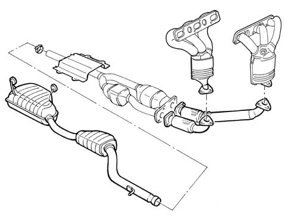

Composition
- Path
- Descriptions > 10 ENGINE > 1076 EXHAUST PIPES AND SILENCERS > Composition
- Kind
- system description
- Applies to
- engines: 3.0 V6, 3.2 V6; all production periods
- Interactive page
- https://sloeber94.github.io/elrnDB-lThss/en/#/612235
Applies to: engines: 3.0 V6, 3.2 V6; all production periods
STRUCTURE
Engine exhaust gases flow into the triple manifolds (1) with integral catalytic converters and then on to catalytic converter unit (3) through two exhaust pipes (2).
The exhaust pipe front sections contain two flexbiel elements (4) to limit vibration transmission.
The rear exhaust pipe section consists of two silencers (5).
Special guards prevent heat radiating toward the body.
The various components are supported by mounts and flexible rings secured to the underbody.
